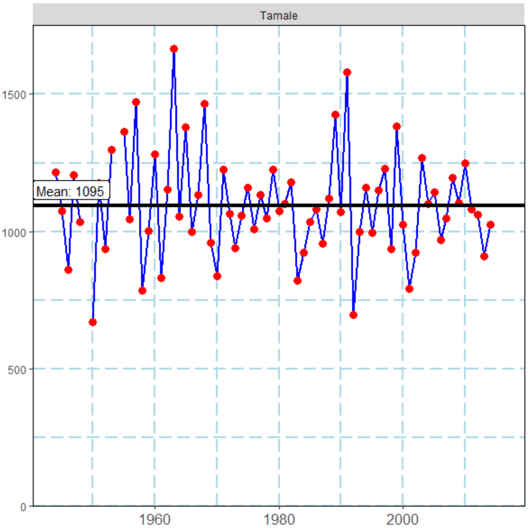
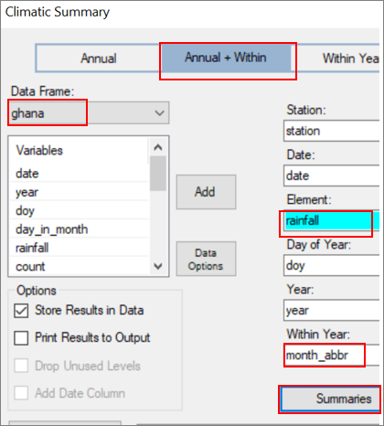
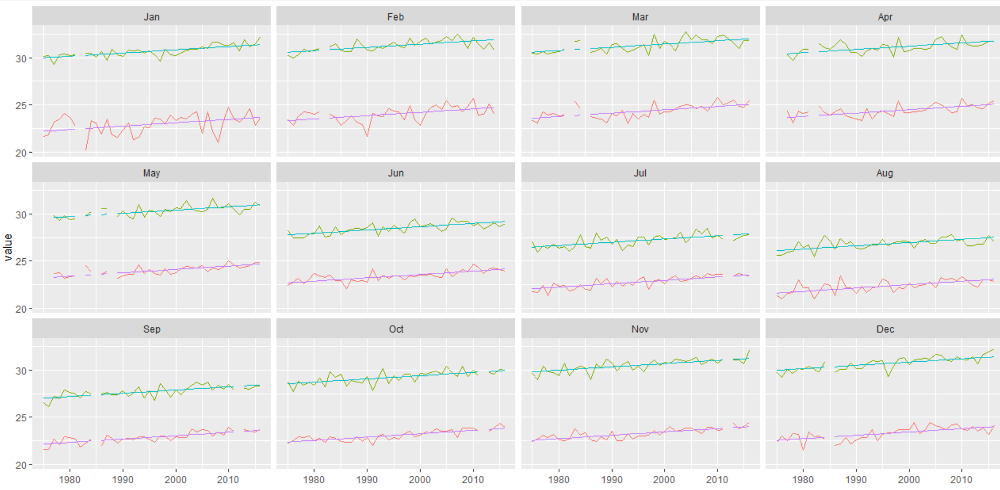

7 Preparing summaries
7.1 Introduction
In this chapter and the next, we use the Climatic > Prepare menu to summarise data into a form ready for analysis and then present the results as graphs and tables. Here we consider monthly and annual summaries of rainfall, temperature and other elements. The next chapter uses similar ideas for more specialised summaries of the rainfall data, such as the start and length of the season.
| Fig. 6.1a The main climatic summary menu | Fig. 6.1b Presenting the summary |
|---|---|
In Section 6.2 data from Ghana are used to illustrate the summary of rainfall data.
To be continued
7.2 Preparing the data
In the second tutorial (reference/link) we showed how to plot annual temperature data, after starting from the daily records. That was without making use of the special climatic menu. These ideas are repeated here and extended for rainfall. The climatic menu is used, and the example is with data from 2 stations. The first step is to prepare the data.
Use File > Open from Library > Instat > Browse > Climatic > Ghana and open the file called ghana_two_stations.rds, Fig. 6.2a. The data are from Saltpond, which is on the coast, with a bimodal pattern of rainfall, and Tamale, which is further North, and with unimodal rainfall. The rainfall starts in 1944 for each station. Other elements, Fig. 6.2a, start later.
| Fig. 6.2a Data from 2 stations ***Fig. 6 | .2b*** |
|---|---|
The data is in the right shape and already has a date column.
First use Climatic > Dates > Infill, Fig. 6.2b, to check there are no missing dates. Some files simply omit the days when all data are missing.
| Fig. 6.2c Infill missing dates ***Fig. 6 | .2d Results from infilling*** |
|---|---|
Complete the dialogue as shown in Fig. 6.2c and press Ok. The number of rows in the data increases slightly to 53297 and the output window states that just under 300 rows have been added.
Use Climatic > Tidy and Examine > One Variable Summarise and complete the dialogue as shown in Fig. 6.2e. The results are in Fig. 6.2f. They show no missing values for the date column (which is good and a relief), and very few missing rainfall days. Most of those were infilled. The other variables have reasonable values. Hence we proceed.
| Fig. 6.2e Checking the data ***Fig. 6.2f | Results*** |
|---|---|
 |
Use Climatic > Date > Use Date, Fig. 6.2g. Then it is convenient to reorder the columns to put the date variables before the climatic data, Fig. 6.2h.
| Fig. 6.2g Generate further date variables | Fig. 6.2h Data |
|---|---|
Finally, in this preparation, use Climatic > Define Climatic Data. The dialogue should fill automatically as shown in Fig. 6.2i. Check that the data are unique and press Ok.
| Fig. 6.2i ***Fig. 6.2j A count co | lumn*** |
|---|---|
Finally, a new step, because we would like to analyse the number of rain days as well as the rainfall totals. A new column, giving whether a day was rainy-or-not, is generated. We show two ways this new column can be generated.
The first way is simple, but it generates a complicated R command, because it is a special case of a more general function. Use Climatic > Prepare > Transform, and complete the dialogue as shown in Fig. 6.2j. This produces a new column, which takes the value 1 for each rain day, and 0 otherwise. We have explained in Chapter 2 why we use the seemingly odd value of 0.85mm as a threshold for rain[^26].
Now try the second method, which generates a very simple R command. It uses R-Instat’s powerful calculator, from Prepare > Column: Calculate > Calculations, Fig. 6.2k
| Fig. 6.2k Using the calculator ***Fig. 6 | .2l Using the additional logical keyboard*** |
|---|---|
 |
The resulting data are shown in Fig. 6.2m. The calculator has produced a logical column, while the transformation using Prepare > Transform has a column of 0 for dry and 1 for rain. There are the same in R as it interprets TRUE as a 1 and False as a zero.
They are now not both needed, so delete one of them. We have kept the logical column.
Fig. 6.2m Data After Right-click > Reorder columns |
|
|---|---|
| | | |
7.3 Annual summaries
The data are now ready to produce annual (or other) summaries. So, use Climatic > Prepare > Climatic Summaries. It should initially be as shown in Fig. 6.3a. (If not, then you might be in a different data frame, or you may not have followed the steps in the section above.)
We are going to produce the annual totals. Fig. 6.3a also indicates it is equally easy to produce the totals for any subset of the year.
| Fig. 6.3a The climatic summary dialogue | Fig. 6.3b The summaries sub-dialogue |
|---|---|
In Fig. 6.3a add the rainfall column and then press the Summaries button. In the sub-dialogue untick the N Total, and keep the N Non Missing and the Sum as shown in Fig. 6.3b. Then press Return and Ok.
Now return to the dialogue and use the Rainday column instead of rainfall.
Also Press on the Summaries button again and untick the N Non Missing checkbox from Fig. 6.3b. Press Return and Ok again.
| Fig. 6.3c | Fig. 6.3d |
|---|---|
The results are in Fig. 6.3d. These data are now at the “year” levels and there are 146 rows, i.e. years, from the 2 sites together. We see that at Saltpond in 1944 the total rainfall was 724mm from 69 rain days. So, the mean rain per rain day is over 10mm and sometimes considerably so. For example, again from Fig. 6.3d in 1951 there was a total of 1428mm from 85 rain days.
There were some missing values in the data, but we defer a discussion of this topic to the next section. Here we have been conservative in that the annual totals have been set to missing if there were any days missing in that year.
Graphs of the data can now be produced. The PICSA project includes discussing time-series graphs with farmers. They must be simple to produce, but also very clear. The special dialogue for this is Climatic > PICSA > Rainfall Graph, Fig. 6.3e.
In Fig. 6.3e, check you are using the correct (yearly) data frame and complete it as shown. In the sub-dialogue, opt to add the mean line, but (at this stage) without a label.
In the sub-dialogue, click also on the Y-axis tab and set the lower limit to 0 (zero).
| Fig. 6.3e PICSA-style rainfall graphs | Fig. 6.3f Sub-dialogue to add lines |
|---|---|
| h |
| Fig. 6.3g PICSA-style graph for 2 stations |
|---|
It can be very useful for researchers and also intermediaries, to see results from multiple stations. This is easy with R-Instat, where they can be in the same data frame. Fig. 6.3h therefore shows another example, with a facetted graph for 12 stations from xxx.
| Fig. 6.3h PICSA-style rainfall graph for 12 stations from xxx |
Graph to add
However, most farmers are particularly interested in the results from a single station that is as close as possible to their location. Hence once you have the appropriate graph for multiple stations, you can then filter the data to look at each station in turn. Filtering is either done from the right-click menu or from within each dialogue.
Return to the previous PICSA dialogue and choose Data Options to give the sub-dialogue shown in Fig. 6.3i
| Fig. 6.3i Define a filter | Fig. 6.3j Choose a single station |
|---|---|
Choose to define a new Filter and complete the resulting sub-dialogue as shown in Fig. 6.3j. As shown in Fig. 6.3j, give the filter the same name as the station. That will make it easy later.
Now return to the PICSA dialogue. Choose the sub-dialogue and change the lines to give terciles with labels. The resulting graph for just Saltpond is in Fig. 6.3k.
| Fig. 6.3k Single station with terciles | Fig. 6.3l Graph for the second station |
|---|---|
|  |
Repeat the filtering exercise above to set a filter for Tamale. The resulting graph with the line for the mean is in Fig. 6.3l.
Similar graphs for the number of rain days is also sometimes needed for PICSA. They are now very easy to produce.
Return to the Climatic > PICSA > Rainfall Graph dialogue, and simply change the Y-variable,
| Fig. 6.3m | Fig. 6.3n |
|---|---|
Return to the dialogue again, press Data Option and choose the filter you called Saltpond, Fig. 6.3o. You don’t need to define the filter as that was done earlier. You can just keep using it.
| Fig. 6.3o | Fig. 6.3p |
|---|---|
Finally, in this section, we stress that the idea of the climatic menu is simply to make it even easier to do common climatic analyses. By “even easier” we mean easier than using the main dialogues in R-instat. If what you would like to do is not (yet) possible with the climatic menu it may still be possible with the ordinary use of R-Instat[^27]. It is important that you remain in charge and are not limited by the particular dialogues. As an example, suppose you would like to fit a trend line to the rainfall data. The PICSA graphs permit horizontal lines, but not trend lines. Perhaps the last graph, Fig. 6.3p has a downward slope?
| Fig. 6.3q Graph with “ordinary” dialogue | Fig. 6.3r Saltpond annual rainfall with trend line |
|---|---|
One way to check this possibility is through the “ordinary” graphics dialogues in R-Instat. So, use Describe > Specific > Line Plot and complete the dialogue as shown in Fig. 6.3q. The results are in Fig. 6.3t. They perhaps hint at a possible trend[^28]. If there is a trend
| Fig. 6.3s Analysis for rainfall totals | Fig. 6.3t Cumulative or Exceedance Graph |
|---|---|
If there is a trend at Saltpond, perhaps it should also be evident in an analysis of the annual totals. Fig. 6.3s shows this is not the case.
Our aim in the above discussion is primarily to discuss the value of the “ordinary” R-Instat dialogues, so users do not restrict all their analysis to the climatic menu. We return to trend analysis in Section 6.6, when we process the temperature data.
Time series are not the only way to display the annual summaries. Use Climatic > PICSA > Cumulative/Exceedance Graph, and complete the dialogue as shown in Fig. 6.3t. If the filter is still operating, then remove it by including Data Options and choosing no_filter in the resulting subdialogue, Fig. 6.3u. The resulting graph is in Fig. 6.3v.
| Fig. 6.3u Removing a filter | Fig. 6.3v Cumulative distributions |
|---|---|
Statisticians like cumulative distributions, but many users prefer exceedance graphs. If that is your wish, then return to the dialogue in Fig. 6.3t and tick the box for an Exceedance Graph. The result is in Fig. 6.3w.
These are just the inverse of each other. Starting with an amount – on the x-axis, you can read the probability of the total rainfall being less than this amount (cumulative graph) or greater than this amount (exceedance graph). So, if you need 800mm for a particular crop, then the exceedance graph informs you there is about a 75% chance of getting this amount, or more, at Saltpond and about a 90% chance at Tamale. The cumulate graph would show a 25% or 10% chance of failure, i.e. of getting less than this amount.
| Fig. 6.3w Exceedance graph | Fig. 6.3x Exceedance graph for rain days |
|---|---|
Finally change the variable in the dialogue in Fig. 6.3t to the number of rain days, to give the graph in Fig. 6.3x. The shapes are the same. The steeper the graphs the smaller the variability and Fig. 6.3v, w and x all show the totals are slightly more variable at Saltpond, compared to Tamale. This can be confirmed numerically using Describe > Specific > Summary Tables. Results are in Fig. 6.3y.
| Fig. 6.3y Numerical results |
|---|
The standard deviation of the annual totals is 273mm at Saltpond compared to 193mm at Tamale, while the means are relatively close. Similarly the standard deviation for the number of rain days is 13 days at Saltpond compared to 9 days at Tamale.
This points to looking at the data in more detail. Hence monthly summaries are examined in the next section.
7.4 More detailed summaries - rainfall
For many applications it is important to know about the seasonality of the data. In this section we therefore consider monthly (rather than annual) totals.
In Fig. 6.2g (link) we used the Climatic > Dates > Use Date dialogue to add the months to the daily data and these are used in this section. Other possibilities with this dialogue are to produce quarters, dekads (10-day periods), pentades or weeks. Any of these periods can be used instead.
Use Climatic > Prepare > Climatic Summaries. It was used initially in Fig. 6.3a to produce the annual summaries.
| Fig.6.4a | Fig. 6.4b |
|---|---|
|  |
In Fig. 6.4a change the tab at the top to Annual + Within and complete as shown. Click on Summaries and choose just the 2 statistics shown in Fig. 6.4b. Then press Return and Ok.
Now change from rainfall to Rainday in Fig. 6.4a and use the Summaries to just get the Sum, i.e. untick the N Non Missing.
The resulting data frame is shown in Fig. 6.4c. There are 1751 rows of data, i.e. the 141 years for the 2 stations, times 12, because the data are now monthly. For example, at Saltpond, January 1944 had a total of 41mm from 2 rain days, whie June of the same year had 22 rain days and a total of 256mm.
| Fig. 6.4c | Fig. 6.4d |
|---|---|
One way to show the seasonal pattern is through boxplots. Use Describe > Specific > Boxplot and complete the dialogue as shown in Fig. 6.4d. Use the Plot Options, Fig. 6.4e, to include the stations as facets and give the results as in Fig 6.4f[^29].
| Fig. 6.4e | Fig. 6.4f |
|---|---|
In Fig. 6.4d, change the variable to sum_Rainday to also give the graph in Fig.6.4g.
Both graphs show the different seasonal pattern at the 2 sites. June is the peak month of the rainy season at Saltpond and there is one year where the monthly total exceeded 800mm. In June, Fig. 6.4g also shows on average about half the days are rainy at Saltpond and that is similar to the number of rain days in Tamale in September.
| Fig. 6.4g | Fig. 6.4h |
|---|---|
Line plots can show the seasonal and time-series nature of the data together. As an example, use Describe > Specific > Line and complete as shown in Fig. 6.4h. In the Plot Options, use the Month as the factor for the facets, to give the graph as shown in Fig. 6.4i[^30]
| Fig. 6.4i |
|---|
The results in Fig. 6.4i show the interesting nature of the June rainfall totals at Saltpond and that the extreme monthly total was in 1962. It also shows the way Tamale consistently has more rainfall than Saltpond in July to September.
The same type of graph can also be produced for the number of raindays, see Fig. 6.4j for a different layout[^31]. It also shows that the initial analysis of rainfall trends using the annual rainfall totals may have been over-simplistic. If trends do exist, then the next step could be to examine whether they are consistent, or not, during the year, i.e. for the different months. Thus, if rainfall seems to be decreasing, then is that in all months/seasons, or just in a part of the year. This issue is examined further in Section 6.6 when analysing the temperature records.
| Fig. 6.4j Time series graphs for the 2 stations by month |
|---|
In reports it can be useful to include the daily data for a sample of the years. Fig. 6.2k shows the daily data for Saltpond in 1962[^32], when June had exceptionally high rainfall.
| Fig. 6.2k Daily data for Saltpond for 1962 |
|---|
 |
There is nothing obviously wrong with the June data, but they look sufficiently curious, that a check back to the paper records and perhaps with nearby stations would seem sensible.
7.5 Options for Missing values
Analyses need to be able to take account of missing values in the data. Statistical packages are usually “sensible” in their handling of missing values and R is no exception. However, defining how they are to be handled in each circumstance is the responsibility of the user and we consider here the options in R and R-Instat.
To illustrate the problem Fig. 6.5a gives an inventory plot for the Ghana data. It shows there is hardly a problem for the rainfall data. The measurement of the other elements started later and there is a slightly greater proportion of missing values.
| Fig. 6.5a | Fig. 6.5b Default annual summaries of rainfall |
|---|---|
| h |
Fig. 6.5b shows some of the annual totals that were used for analysis in Section 6.3. A column in Fig. 6.3b shows also the number of missing values each year. It shows there were missing values in the last 2 years and the annual summary has therefore been set to missing. This is “safe” but it may be disappointing as the last 2 years totals have therefore been set to missing, and have therefore been excluded from the analysis.
Repeating this point, the default in R, and hence in R-Instat, is that when there are any missing values (even just one day in the year) then the summary is set to missing.
The opposite approach is also simple to undertake. This is where all the missing days are omitted, and the summary is then calculated using the remaining data. This uses the same Climatic > Prepare > Climatic Summaries dialogue, but check the box labelled Omit Missing Values.
| Fig. 6.5c Data with both summaries | Fig. 6.5d Years with missing values |
|---|---|
The results are in the last 2 columns of Fig. 6.5c. They show the total rainfall to be 665mm in Tamale in 2015 from 53 rain days – quite low compared with other years. In 2016 the values are 998mm with 67 rain days.
R-Instat has added intermediate options described below. Before that, we consider what more can be done with just these 2 extremes.
Fig. 6.5d shows the annual data for those years where there are missing values. There are just 9 years overall, 5 at Saltpond and 4 at Tamale. Hence, with data from 1944 to 2016, this leaves over 60 years of data at each site. Hence, one option is to accept the omission of those years and proceed, which is what was done in Section 6.3.
A second possibility results from the observation, Fig. 6.5d, that in 3 of the 9 years there was just a single day missing in the year. Perhaps it is reasonable to accept the totals in those years and then just have 6 missing years overall.
To go further we now look in more detail at the daily data. One coincidence is that both sites have missing data in 1949 and an examination is that this is for the same 3 months, i.e. from October to December. We don’t like coincidences and wonder why.
More generally, the other years have just one or two months missing. If that were between November and February – when there is usually little rain, then perhaps the total could be accepted. In this case that is not the case. For example August 2015 is missing in Tamale, and this perhaps explains why the total and number of rain days was low in that year. Omitting it, as we did, in Section 6.3, was sensible.
A more major possibility is that Saltpond collects data every 3 hours and Tamale collects hourly data. So perhaps the Met service has more detailed records that could help to infill the missing daily values.
To see further options for missing values, return to the Climatic > Prepare > Climatic Summaries dialogue. Choose the Summaries button and the Missing Options tab, Fig. 6.5e. The setting we chose of 27 means that any year with a month or more missing, gives a missing summary. In this case, as shown in Fig. 6.5f, it has just given the annual totals for the 3 years with just a single missing day.
In some examples the third option in Fig. 6.5e becomes important. Sometimes the data, as supplied, starts, or ends during a year. In this instance the first and/or the last year may be incomplete. For example the Tamale data in 1944 start in February, rather than January. This was not an issue, because January is relatively dry, but had they started in July 1944 that would have been different and should have been allowed for.
In Fig. 6.5e this corresponds to setting the Option Not Missing to about 340 (days) rather than the Missing Days to 27.
| Fig. 6.5e | Fig. 6.5f |
|---|---|
A different, and more major, operation is to try to “infill” or complete the data, where there are missing values. There is a wide variety of methods, ranging from input of the mean value from that day of the year to using estimates from a neighbouring station, or from satellite observations. They are considered in Chapter xxx.
7.6 Processing temperature data
The Climatic > Prepare > Climatic Summaries dialogue applies to any element. With the Ghana data the annual temperature summaries can therefore be added to those of the rainfall calculated in Section 6.3.
| Fig. 6.6a | Fig. 6.6b Include temperature extremes |
|---|---|
| h |
Complete the dialogue as shown in Fig. 6.6a and then the Summaries sub-dialogue as shown in Fig. 6.6b. This produces the annual mean and the annual extremes of the daily minimum temperatures.
Then use the Missing Options tab, shown in Fig. 6.6b and complete it as shown earlier in Fig. 6.5e. This will give the annual summaries if there are a few missing days, but not if a month or more is missing.
Once you have these summaries, return to the dialogue in Fig. 6.6a and replace the minimum by the maximum temperatures.
The measurement of temperatures started in 1960, hence the summary data are now filtered, prior to producing graphs.
| Fig. 6.6c Annual temperature data | Fig. 6.6d |
|---|---|
| h |
Use the Describe > Specific > Line Plot dialogue, and complete as shown in Fig. 6.6d. In the plot options, choose to Facet by the station[^33].
| Fig. 6.6e |
|---|
In Fig. 6.6e the data on the extremes must be treated with caution, because they are the values on a single day each year. There does appear to be a trend in the mean for Tmax, particularly at Tamale. This can be confirmed using the Model > Three Variables > Fit Model dialogue, which is described in more detail in Chapter xxx. The results show an estimated increase of 2.3°C for Tamale. The estimated increase for Saltpond was just 0.4°C and that was not statistically significant.
The graph can be repeated for the minimum temperatures (not shown). Instead, Fig. 6.6 shows Tmax and Tmin together. The estimated trend in Tmin is an increase of 2.0°C per 100 years and is almost the same at the two sites. Fig. 6.6f also shows clearly the much greater diurnal range at Tamale, compared to Saltpond.
| Fig. 6.6f |
|---|
In Fig. 6.6f (and earlier in Fig. 6.6e) the mean line for Saltpond looks odd. In this Chapter the quality control steps, discussed in Chapter 5, have been omitted and, as usual, that was not a good idea! Fortunately, the daily data are available, so we return to these and do a simple time series plot of the daily records, Fig. 6.6g. This indicates an oddity in the data in about 1974.
| Fig. 6.6g Tmax for Saltpond daily data by Date | Fig. 6.6h Monthly means for Tmax |
|---|---|
This is confirmed in Fig. 6.6h, where the monthly means for Tmax at Saltpond are displayed for the 1970s[^34]. They show a drop of about 2 degrees from May 1974.
The next step in this small investigation is to display the daily records, as shown in Fig. 6.6i. Looking at the daily data it became clear they were originally recorded in degrees Fahrenheit and (at least usually) just to the nearest degree. Hence, for clarity, the Tmax data were transformed back into Fahrenheit[^35] and then displayed, as shown in Fig. 6.6i.
| Fig. 6.6i | Fig. 6.6j |
|---|---|
Fig. 6.6i confirms the change was in May 1974, or possibly 30 April. In most years temperatures in May are about 0.5°C lower than April, or about 1°F. In the 1974 record it is 4 or 5 degrees Fahrenheit lower.
Fig. 6.6j therefore repeats the analysis, shown earlier in Fig. 6.6e, but just from 1975. The results are now consistent with the data from Tmin at Saltpond and with the Tamale data. The trend for the mean is slightly higher at 3.2°C per 100 years.
Analyses of the temperature records, like the above, are common. There is an immediate follow-up question that is often omitted, namely is the trend in the temperatures consistent through the year, or is it perhaps different in the rainy and dry seasons?
As in Section 6.4 for the rainfall, we therefore extend the analysis and examine the monthly data.
7.7 More detailed summaries - temperatures
We examine the possible trends in Tmin and Tmax, at the two stations, monthly. A specific question is whether there is evidence for a different trend in some months, compared to others.
For simplicity, given the inhomogeneity of Tmax at Saltpond, the daily data are first filtered so only the data from 1975 are analysed, Fig. 6.7a.
| Fig. 6.7a Filter the data (optional) | Fig. 6.7bMonthly summaries |
|---|---|
Then use Climatic > Prepare > Climatic Summaries, Fig. 9.7b. In Fig. 9.7b click on Summaries and just choose the mean.
Then repeat for Tmax, to give the data as in Fig. 6.7c.
| Fig. 6.7c Monthly means for Tmin and Tmax | Fig. 6.7d |
|---|---|
Then Describe > Specific > Line Plot, as shown in Fig. 6.7d indicates a reasonably consistent slope at both sites, for each of the months, Fig. 6.7e.
| Fig. 6.7e Trends by month for the two stations |
|---|
However, this does not quite answer the question posed, namely that the trend is independent of the month, i.e. it is the same in each month.
The modelling dialogues are needed to address this hypothesis. The menu is shown in Fig. 6.7f.
| Fig. 6.7f The Model menu | Fig. 6.7g Filter by Station |
|---|---|
In the modelling menu, Fig. 6.7f, the One Variable sub-menu permits a wide variety of distributions to be fitted to a single variable, i.e. a single column of data.
Moving down in Fig. 6.7f the Two Variables sub-menu is designed to model a single y (dependent) variable against one x (independent) variable. An example would be Tmax against the year. That would be ok if we had annual data, as in Section 6.6, but we have the monthly data.
In our case we need at least three variables. The dependent is initially Tmax and this is modelled as a function of both the year and month, i.e. we have a total of 3 variables.
Once you use the modelling dialogues as a routine, then the General dialogues are usually used, or (below the line in Fig. 6.7f) the even more general Model dialogue, where you just give an R command.
To simplify the modelling, first filter for a single station, Fig. 6.7g. Call the filter Saltpond (rather than Filter1).
| Fig. 6.7h Make a new data frame | Fig. 6.7i |
|---|---|
Return. to the main dialogue and opt to Apply as Subset, Fig. 6.7h.
Now, for the first model. Use Model > Three Variables > Fit Model with the new Saltpond data frame and complete it as shown in Fig. 6.7i. Initially you have a ‘*’ between the year and month variables. This fits a different slope for each month, as shown earlier, for Saltpond, in Fig. 6.7e.
| Fig. 6.7j | Fig. 6.7k |
|---|---|
A lot of results are produced. Key information is the ANOVA table shown in Fig. 6.7j. This shows that there is a clear trend (year) and seasonality (month_abbr). It also shows that there is no evidence of the interaction, i.e. the year:month_abbr explains very little variation in the data, and what it explains is not statistically significant.
Hence, the separate slopes each month are not needed. A parallel line model is adequate.
So, return to the dialogue in Fig. 6.7i and change the ‘*’ into a ‘+’. At the same time, click on the Display Options and choose to Save the Fitted Values, Fig. 6.7k.
Before examining the results there is one small (optional) change that sometimes simplifies the interpretation. With the year as given, i.e. starting in 1975, the origin is almost 2000 years ago. Instead you could make 1975 as the origin, using Prepare > Column: Calculations > Calculate and making a new column, say yr <- year -1975. Then use yr instead of year in the model.
| Fig. 6.7l | Fig. 6.7m |
|---|---|
Interpreting the model in Fig. 6.7l the trend (yr coefficient) is a possibly disturbing 3.4 degrees per 100 years. For the seasonality, the mean temperature in January 1975 was estimated as 29.9°C. February and March were each estimated to be an average of 0.6°C higher, i.e. about 30.5 degrees, while August had the lowest average temperatures.
In some stations there is “local warming” where the station surroundings are more built up. Hence this should be checked, before assuming the large trend per year is a feature of global warming.
A similar analysis for Tmin, again shows no evidence that a different trend is needed each month. Saving those fitted values also, as shown in Fig. 6.7m permits the parallel lines to be plotted, using Describe > Specific > Line Plot, as shown in Fig. 6.7n
| Fig. 6.7n Observed and fitted temperatures at Saltpond |
|---|
|  |